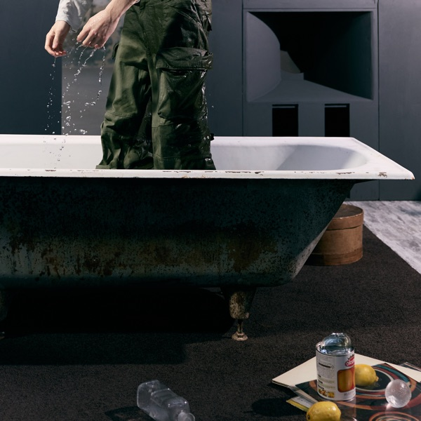

MOOD1 플레이리스트 >
R&B 장르의 곡으로, 해질녘이나 밤에 들으면 듣기 좋은 노래들입니다.

UN Village · 백현
가을에서 겨울 밤에 차가운 공기를 만끽하며 도시의 야경을 보며 듣기 좋은 노래 도입부의 독특한 사운드와 세련된 비트가 질리지 않는다 알앤비에서 ‘비’는 백현이라는 말이 있을 정도로 R&B를 좋아한다면 꼭 추천

Smoke · 재현
그루브를 타기 좋은 곡 미니멀한 R&B 비트 위에 딥한 리듬과 스모키한 질감의 사운드가 인상적 숨결 섞인 보컬이 분위기를 더 짙게 만든다


마음대로 · 콜드
콜드 특유의 보컬톤과 음악 스타일이 잘 드러나는 곡 어쿠스틱 기타 중심의 사운드와 웜톤 베이스 보컬이 악기처럼 자연스럽게 섞여 전체적인 질감이 부드럽다